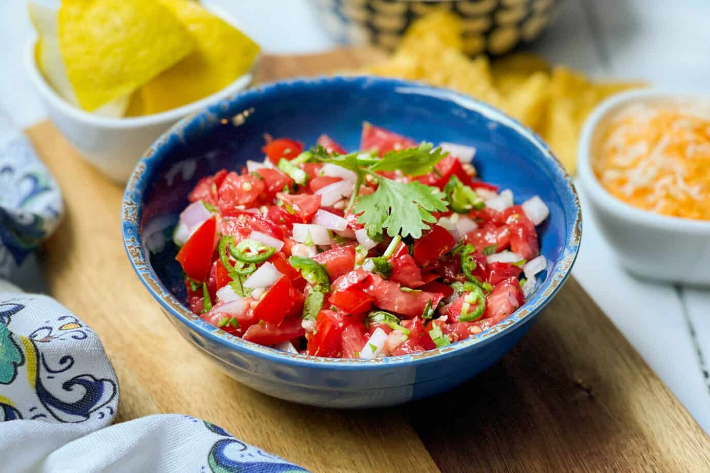
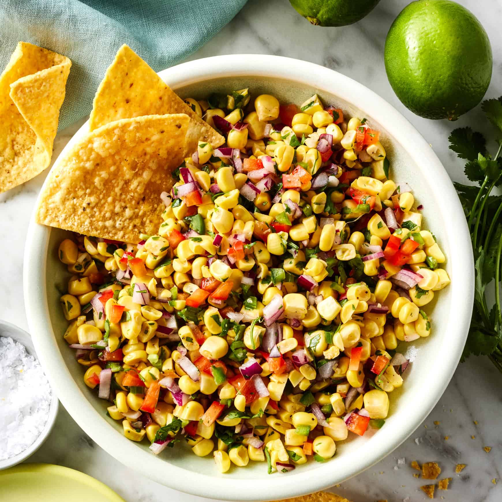

Why Chipotle is the Best Fast-Food Chain of All Time
Honestly, when people ask me why I think Chipotle is the best fast-food chain of all time, I feel like they’re almost setting me up to go on a rant—because I will, without hesitation. Chipotle isn’t just “good”; it sits in its own category of fast food that nothing else has managed to match. First off, the whole experience feels way more personal and customizable than any other chain. You don’t just order something off a menu—you build it. You get to watch your meal being put together right in front of you, piece by piece, like you’re the mastermind behind your own edible masterpiece. And there’s just something satisfying about seeing all the ingredients laid out, fresh, colorful, and ready to go. No mystery patties, no weird frozen gray meat, no “trust us, it’s chicken” situations. It’s real food, real ingredients, real flavor. And for a fast-food chain to pull that off consistently is kind of insane. But what really makes Chipotle the GOAT for me is the flavor and fullness. You walk out feeling like you actually ate a real meal—not something that’s going to disappear from your stomach in twenty minutes. Their bowls and burritos are hefty. Like, you can literally feel the weight of your lunch in your hand and know you’re not going to be hungry again until tomorrow. And the taste? Undeniable. Chipotle figured out the perfect balance: savory rice, juicy meat options, beans that don’t taste canned or mushy, salsas that have actual flavor instead of mild “Google translated spice,” and toppings that actually feel like they belong there. Every bite has a purpose. Even the simplest combinations somehow end up tasting like you’ve been transported to the universe where fast food decided to actually try. The consistency is a huge part of it, too. You could go to different Chipotle locations in completely different cities, states, or even time zones, and the food still hits the same way. It’s predictable in the good way—not boring predictable, but reliable predictable. You know exactly what you’re getting, and you know it’s going to be good. Plus, their menu is simple enough to not be overwhelming, but customizable enough to let people feel like they’re ordering something totally unique. It’s basically the golden formula: controlled variety. Not too many items, but thousands of possible combinations. And then there’s the cultural impact. Chipotle isn’t just food; it’s a personality trait at this point. You don’t “go grab fast food,” you “go get Chipotle.” It became a lifestyle spot: athletes love it, influencers constantly post it, college students basically live off it, and even health-focused people treat it like a cheat meal that somehow isn’t actually cheating. Chipotle managed to become that rare thing—a fast-food chain that pulls people from completely different worlds, different diets, and different budgets. Vegans, bodybuilders, parents, teenagers, picky eaters—they all coexist in perfect harmony in a Chipotle line. You can pack your bowl with double everything or build the cleanest, most disciplined meal ever made. It’s flexible in a way that most fast-food chains could never dream of being. Price-wise, people complain sometimes, but let’s be real: for the amount of food you get, the quality of the ingredients, and the absolute lack of that greasy, regret-filled fast-food aftertaste, it’s actually a deal. You’re not paying for a burger that was sitting under a heat lamp like it’s waiting for its shift to end—you’re paying for something that was assembled right in front of you with care, speed, and actual human attention. And let’s talk vibe. The aesthetic of Chipotle is unmatched. Clean design, simple layout, modern metallic accents, that warm aroma of cilantro-lime rice and grilled meat floating through the air—everything feels intentional. You feel like you’re somewhere between fast casual and full-on restaurant, but without the hassle of waiting for someone to seat you or hand you a menu you don’t want to read anyway. It’s the perfect environment for grabbing food with friends, eating alone without feeling weird, doing homework, taking a quick lunch break, or even killing time. Chipotle is the definition of a universal safe zone. At the end of the day, what makes Chipotle the best fast-food chain of all time is how it manages to check every single box without sacrificing anything. Fresh food? Check. Speed? Check. Customization? Check. Flavor? Big check. Portion size? Absolutely. Consistency? Without question. Cultural relevance? Off the charts. It’s the only place where you walk in already excited and walk out feeling satisfied, full, and weirdly proud of your order, as if you accomplished something meaningful. Chipotle didn’t just make fast food better—it redefined it. And that’s why, in my opinion, nothing else even comes close.
My Chipotle order
| Image | Item Name | Description |
|---|---|---|
 |
Brown Rice | Description for Photo 1 goes here. |
 |
Black Beans | Description for Photo 2 goes here. |
 |
Chicken | Description for Photo 3 goes here. |
|  | Salsa | Description for Photo 4 goes here. |
 |
Sour Cream | Description for Photo 5 goes here. |
 |
Tomatillo Red-Chilli Salsa | Description for Photo 6 goes here. |
|  | Chilli Corn Salsa | Description for Photo 7 goes here. |
 |
Cheese | Description for Photo 8 goes here. |